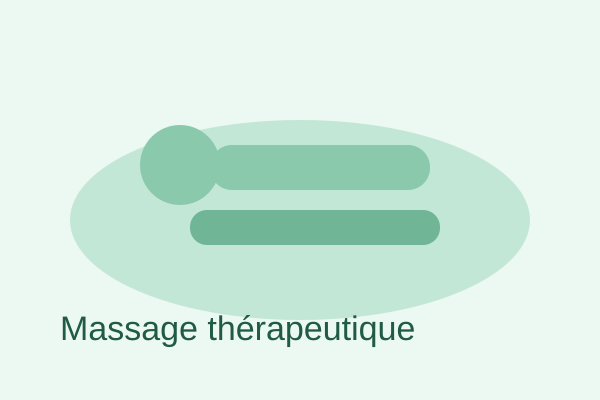
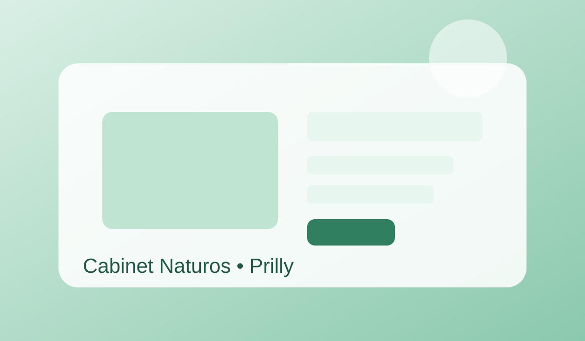
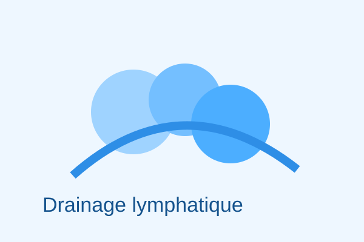

Massage thérapeutique & sportif
Soulagement des douleurs, libération des tensions, amélioration de la mobilité et récupération musculaire.

Raymond Héritier vous accueille au Cabinet Naturos à Prilly pour des soins personnalisés: massage thérapeutique, drainage lymphatique, ventouses, électrostimulation, biorésonance et magnétisme.

Soulagement des douleurs, libération des tensions, amélioration de la mobilité et récupération musculaire.

Technique douce visant à stimuler la circulation lymphatique, réduire les œdèmes et améliorer le confort global.

Approche énergétique et holistique avec conseils personnalisés pour l’équilibre corps-esprit.
Lundi: 09:30 – 19:00
Mardi: 07:00 – 19:00
Mercredi: 07:00 – 19:00
Jeudi: 07:00 – 19:00
Vendredi: 09:30 – 20:00
Samedi: 09:30 – 13:15 / 15:30 – 18:00
Dimanche: Fermé
Adresse: Chemin du Centenaire 5, 1008 Prilly (3ème étage, Prilly Centre).
Oui, les nouveaux patients sont les bienvenus sur rendez-vous.
Les consultations sont proposées en français.
Massage classique et sportif, drainage lymphatique, biorésonance, magnétisme et conseils en spagyrie.